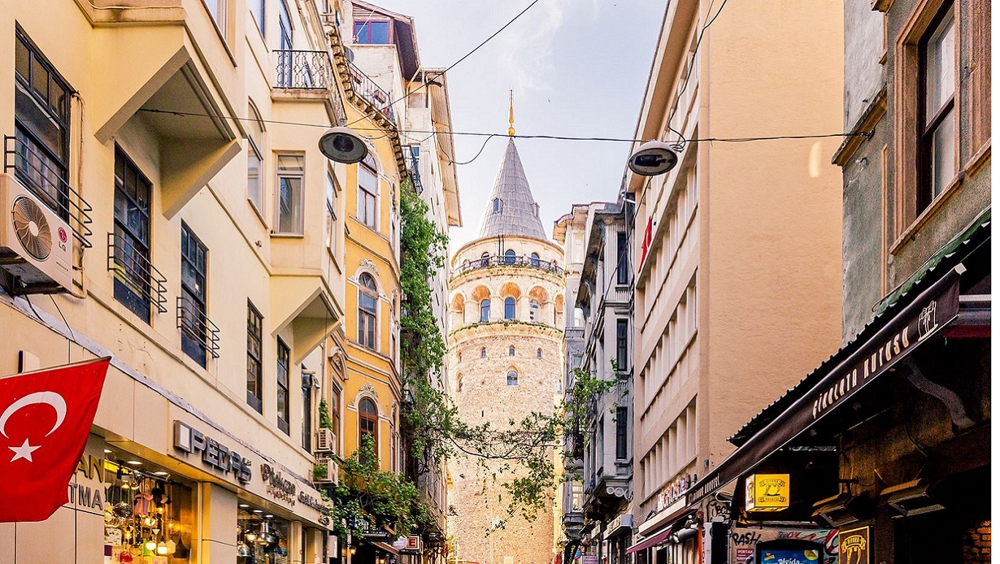

Nerelerde Variz?
Udemig'de sunulan bölümler, öğrencilere çeşitli kariyer ve ilgi alanlarında başarılı olmaları için gerekli becerileri kazandırmayı hedefler. Bu çeşitlilik, öğrencilerin kendi ilgi ve yeteneklerine uygun bir program seçmelerini ve gelecekte istedikleri alanda başarılı bir kariyere adım atmalarını sağlar.

İstanbul
Londra